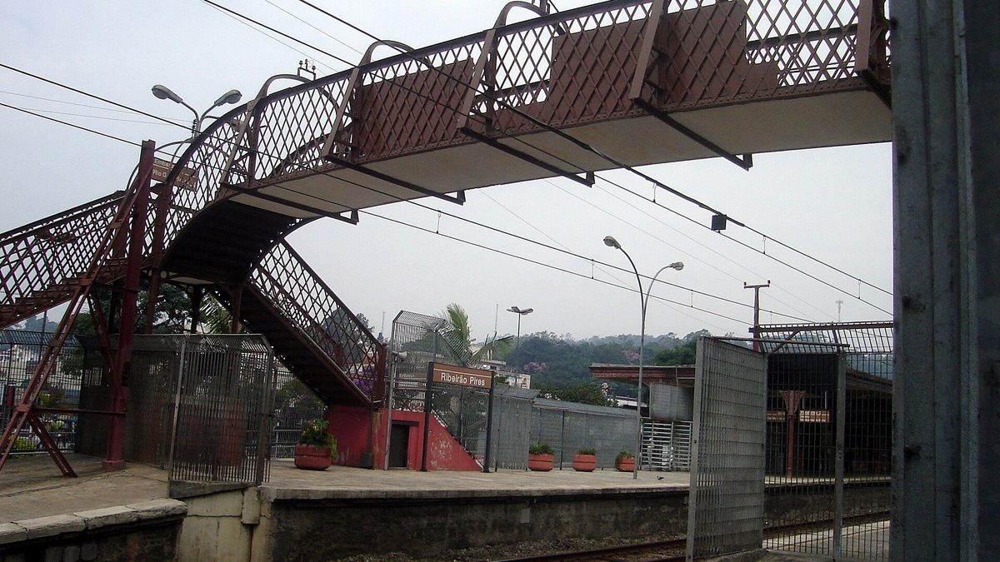

브라질 히베이랑피르스, 공공건물 12곳에 태양광…국가전력청 효율 사업에 두 번째 선정돼 460만 헤알 받아

시청·보건위생국·시립학교 9곳 등 보건·교육·치안 시설 대상…2024년 첫 선정 땐 420만 헤알로 10곳, 용량·절감액은 공개 안 돼
브라질 상파울루주 히베이랑피르스(Ribeirão Pires)시가 국가전력청(ANEEL)의 에너지효율 프로그램에 두 번째로 뽑혀 460만 헤알을 받아 공공건물 12곳에 태양광 발전설비를 놓는다고 시가 밝혔다. 이번 대상은 보건·교육·치안 분야 시설로, 시가 이름을 밝힌 곳은 시청과 보건위생국, 시립학교 9곳이다. 시는 2024년 첫 선정 때 420만 헤알로 시설 10곳을 지원받아 시 경비대 기지와 옛 상루카스 병원·산원, 여성 통합보건센터, 시립학교 3곳 등에 이미 설비를 놓았고, 버스터미널과 시의회 건물 등에도 패널이 있다. 구투 볼피(Guto Volpi) 시장은 태양광 발전으로 공공 지출을 줄이면 그 돈을 새 시설과 서비스 유지에 돌릴 수 있다고 말했고, 클레이톤 프란시스쿠(Clayton Francisco) 근대화·사업국장은 이번 투자가 공공 시설을 더 효율적으로 만들고 에너지 비용 의존을 줄이려는 시 계획의 하나라고 설명했다. 시는 새로 놓을 설비의 용량과 예상 절감액, 설치 일정은 밝히지 않았다.
시민에너지 관점
히베이랑피르스는 2년 사이 두 차례 외부 재원을 끌어와 시설 10곳에 이어 12곳, 모두 22곳의 공공건물 지붕을 태양광으로 채워 가고 있어, 공공 지붕을 한 번의 행사가 아니라 목록을 정해 차례로 채우는 계획이 왜 필요한지를 보여 준다. 공공건물은 지자체가 직접 설비를 놓는 편이 빠르다는 반론도 있지만, 아낀 전기요금은 예산 속에 묻혀 주민이 체감하기 어렵고 용량·절감액이 공개되지 않으면 성과를 따질 수도 없다. 학교와 보건소처럼 주민이 날마다 드나드는 건물의 지붕 일부를 주민 협동조합에 열면 예산 절감과 함께 주민 소득과 에너지 교육이라는 몫이 지역에 남는다. 국내 지자체도 공공건물 지붕 목록과 단계별 설치 계획을 공개하고, 그 가운데 일정 몫을 주민이 출자해 소유하는 발전소로 정해 두어야 한다.
출처: Hoje Diário 2026-10-30 Redação 원문 보기
ブラジル・リベイラン・ピレス、公共施設12カ所に太陽光…国家電力庁の省エネ事業に2度目の選定で460万レアル
市庁舎・保健衛生局・市立学校9校など保健・教育・治安分野の施設が対象…2024年の初選定では420万レアルで10カ所、容量・節減額は非公表
ブラジル・サンパウロ州のリベイラン・ピレス（Ribeirão Pires）市は、国家電力庁（ANEEL）の省エネルギー・プログラムに2度目の選定を受け、460万レアルを得て公共施設12カ所に太陽光発電設備を設置すると明らかにした。今回の対象は保健・教育・治安分野の施設で、市が名前を挙げたのは市庁舎と保健衛生局、市立学校9校だ。市は2024年の初選定でも420万レアルで10施設が支援を受け、市警備隊の基地や旧サン・ルーカス病院・産院、女性総合保健センター、市立学校3校などにすでに設備を設けており、バスターミナルや市議会の建物などにもパネルがある。グト・ヴォウピ（Guto Volpi）市長は、太陽光発電で公共支出を減らせば、その分を新しい施設やサービスの維持に回せると述べ、クレイトン・フランシスコ（Clayton Francisco）近代化・事業局長は、今回の投資は公共施設をより効率的にし、エネルギー費用への依存を減らすための市の計画の一環だと説明した。市は新たに設置する設備の容量や見込まれる節減額、設置日程は明らかにしていない。
市民エネルギーの視点
リベイラン・ピレスは2年の間に2度外部資金を呼び込み、10施設に続いて12施設、計22カ所の公共施設の屋根を太陽光で埋めつつあり、公共の屋根を一度きりの行事ではなく、リストを定めて順に埋めていく計画がなぜ必要かを示している。公共施設は自治体が直接設置したほうが早いという反論もあるが、節約した電気代は予算の中に埋もれて住民には実感しにくく、容量や節減額が公開されなければ成果を検証することもできない。学校や保健所のように住民が日々出入りする建物の屋根の一部を住民の協同組合に開けば、予算の節減とともに住民の所得とエネルギー教育という取り分が地域に残る。韓国の自治体も公共施設の屋根のリストと段階的な設置計画を公開し、その一定の割合を住民が出資して所有する発電所と定めておくべきだ。
出典: Hoje Diário 2026-10-30 編集部（Redação） 原文を読む
巴西里贝朗皮里斯在12处公共建筑安装太阳能…第二次入选国家电力局能效项目获460万雷亚尔
对象为市政厅、卫生局和9所市立学校等卫生、教育、治安领域设施…2024年首次入选时以420万雷亚尔覆盖10处，装机容量和节省金额未公开
巴西圣保罗州里贝朗皮里斯（Ribeirão Pires）市表示，该市第二次入选国家电力局（ANEEL）的能效项目，将获得460万雷亚尔，在12处公共建筑安装太阳能发电设备。此次对象为卫生、教育和治安领域的设施，市政府点名的有市政厅、卫生局和9所市立学校。该市在2024年首次入选时也以420万雷亚尔为10处设施获得支持，已在市警卫队基地、原圣卢卡斯医院和妇产医院、妇女综合保健中心以及3所市立学校等处安装设备，公交总站和市议会大楼等也已装有光伏板。市长古托·沃尔皮（Guto Volpi）表示，通过太阳能发电减少公共支出，就能把这笔钱用于新设施和维持公共服务；现代化与项目局局长克莱顿·弗朗西斯科（Clayton Francisco）说明，这项投资是市政府让公共设施更高效、减少对能源成本依赖的计划的一部分。市政府没有公布新设备的装机容量、预计节省金额和安装时间表。
市民能源视角
里贝朗皮里斯在两年内两次争取到外部资金，继10处之后再覆盖12处，共22处公共建筑屋顶陆续装上太阳能，这说明公共屋顶不应是一次性的活动，而需要先列出清单、再按顺序铺设的计划。有人认为公共建筑由地方政府直接安装更快，但节省的电费埋没在预算之中，居民难以感受到，如果不公开装机容量和节省金额，也无法检验成效。若把学校、卫生站等居民天天出入的建筑屋顶的一部分开放给居民合作社，在节省预算的同时，居民收入和能源教育这份收益也会留在地方。韩国地方政府也应公开公共建筑屋顶清单和分阶段安装计划，并把其中一定份额定为由居民出资拥有的发电站。
来源: Hoje Diário 2026-10-30 编辑部（Redação） 查看原文
Brazil's Ribeirão Pires to put solar on 12 public buildings after second selection for national regulator's efficiency programme, receiving R$4.6 million
City hall, the health department and nine municipal schools among health, education and security sites; first selection in 2024 brought R$4.2 million for 10 sites, while capacity and savings have not been disclosed
The city of Ribeirão Pires in Brazil's São Paulo state says it has been selected for a second time for the Energy Efficiency Programme of the national electricity regulator ANEEL and will receive R$4.6 million to install solar power systems on 12 public buildings. The sites are in health, education and public security, and those named by the city are city hall, the health department and nine municipal schools. In the first selection in 2024, the city received R$4.2 million for 10 facilities and has already installed systems at sites including the municipal guard base, the former São Lucas hospital and maternity ward, a women's health centre and three municipal schools, while the bus terminal and the city council building also have panels. Mayor Guto Volpi said solar generation can cut public spending and free up money for new facilities and the upkeep of services, and Clayton Francisco, secretary for modernisation and projects, said the investment is part of a municipal plan to make public buildings more efficient and less dependent on energy costs. The city did not disclose the capacity of the new systems, expected savings or an installation timetable.
Citizen Energy View
By drawing in outside funding twice in two years, first for 10 sites and now for 12, Ribeirão Pires is covering the roofs of 22 public buildings with solar, showing why public roofs need a plan that lists them and fills them in order rather than one-off ceremonies. Some argue that it is quicker for local governments to install panels on their own buildings, but savings on power bills disappear into the budget where residents hardly notice them, and without published capacity and savings figures the results cannot be checked. Opening part of the roofs of schools and clinics, buildings residents use every day, to residents' cooperatives would leave income and energy education in the community alongside the budget savings. Korean local governments should likewise publish lists of public roofs and phased installation plans, and set aside a share of them for power plants owned by residents who invest in them.
Source: Hoje Diário 2026-10-30 Newsroom (Redação) Read the original